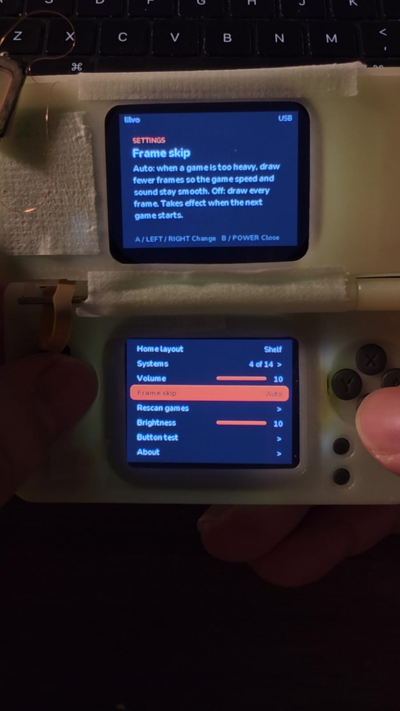
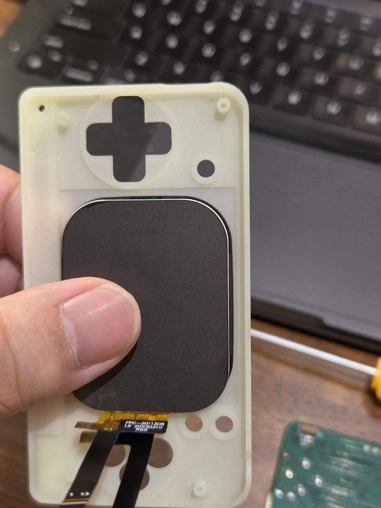

Build log / Oct 21, 2026
It's a handheld now
Everything so far had been a board on the desk with screens hanging off it. Tonight it all went into a printed shell.


What works
- Both screens, the top one through the hinge cable.
- All buttons except L / R (left off this board on purpose).
What doesn't (yet)
- The tape. The printed shell doesn't hold the lid screen firmly yet.
- The buttons felt stiffer than on a FunKey S, so I switched every button to a lighter 1.0 N switch for the Beta boards.
- The shoulder buttons need a thicker part behind them. That's noted for the next shell version.
Machined ABS samples of the latest shell are on their way, so the next photos should look a lot less like a science project.